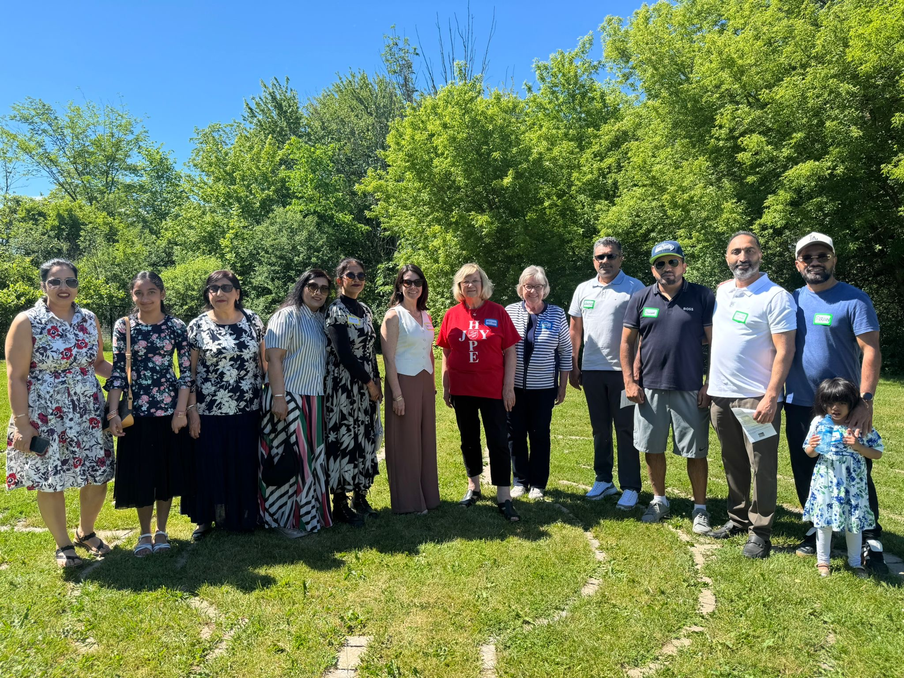

Deliver practical, neighbourhood-first leadership that fixes everyday problems — safer streets, smoother roads, responsible spending, cared-for parks and growth that respects Halton Hills.
JASVIR FOR CITY COUNCILLOR · WARD 2 · HALTON HILLS
Protect what we love.
Improve what we use every day.
A practical plan for smoother streets, safer neighbourhoods, responsible taxes, better parks and thoughtful growth that protects Halton Hills’ character.

JASVIR
MEET JASVIR
Local priorities. Clear follow-through.
Ward 2 residents should be able to see where their tax dollars go, feel safe walking through local plazas, drive on roads that are properly maintained, and trust that growth is being managed with care.
Jasvir’s campaign is built around practical municipal priorities that affect daily life — with sensible spending, straightforward communication and a strong voice for Halton Hills at Town Hall.


MISSION & VISION
A Halton Hills that works better without losing what makes it special.
A safer, better-kept and more affordable Halton Hills where families move easily, public spaces thrive, and new development strengthens — rather than overwhelms — our small-town character.
OUR COMMUNITY PRIORITIES
Six everyday issues. Six clear commitments.
Focused on what residents notice on the drive to work, the walk to school, the trip to the park and the property tax bill.
Better Roads
Faster pothole repairs and smoother neighbourhood streets.
Safer Plazas
Better lighting, stronger visibility and theft prevention.
Safer Speeds
Traffic calming where children and families need it most.
Smarter Spending
Responsible budgets that respect every property tax dollar.
Better Parks
Cleaner, safer and well-maintained neighbourhood green spaces.
Thoughtful Growth
Development that protects infrastructure and local character.

01 · ROADS
Roads you can rely on
Fix potholes faster and smooth out neighbourhood streets so everyday drives are safer, easier and less frustrating. Jasvir will push for clearer maintenance priorities and timely follow-up when residents report recurring road problems.

02 · COMMUNITY SAFETY
Safer local plazas
Support better lighting, stronger patrol visibility and practical prevention measures to deter theft and make local commercial areas feel safer. Residents and businesses deserve confidence in the places they visit every day.

03 · ROAD SAFETY
Slow down where it matters
Target dangerous speeding on residential streets and in school zones with practical traffic-calming, better signage and appropriate enforcement. Safer streets mean parents, children, cyclists and pedestrians can move through their neighbourhoods with greater confidence.

04 · AFFORDABILITY
Respect every tax dollar
Scrutinize spending, protect essential services and keep affordability at the centre of municipal budget decisions. Jasvir will advocate for clear priorities, responsible planning and better value for the property taxes residents already pay.

05 · PARKS
Parks families are proud of
Upgrade local parks and keep green spaces cleaner, safer and better maintained for children, families and neighbours. Well-cared-for public spaces strengthen neighbourhoods and give residents more places to gather, play and enjoy Halton Hills.

06 · GROWTH
Growth without losing Halton Hills
Manage new development carefully so roads, services and infrastructure can keep up with change. Growth should be thoughtful, reduce unnecessary overcrowding and protect the small-town character that makes Halton Hills a place people are proud to call home.
Start with what residents are actually experiencing.
Put essential neighbourhood services ahead of distractions.
Communicate clearly and push for visible follow-through.

ROOTED IN COMMUNITY
Ward 2 should feel heard between elections, not just during them.
Good local government starts with easy access to your councillor and clear follow-up on neighbourhood concerns.
Tell Jasvir what matters on your street →WARD 2 · HALTON HILLS
Know your ward. Know your voice.
Use the Ward 2 boundary map to confirm your neighbourhood and see the community Jasvir is running to represent.
Open Ward 2 PDFJOIN TEAM JASVIR
Neighbour by neighbour, we can build a stronger Ward 2.
Whether you have an hour, an afternoon or a few weekends, there is a meaningful way to help.
LET'S CONNECT
What would you fix first in Ward 2?
Share a street concern, ask a campaign question, volunteer, or simply introduce yourself.